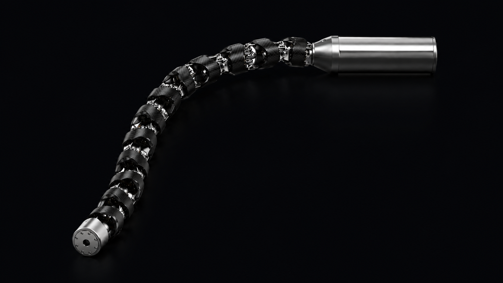
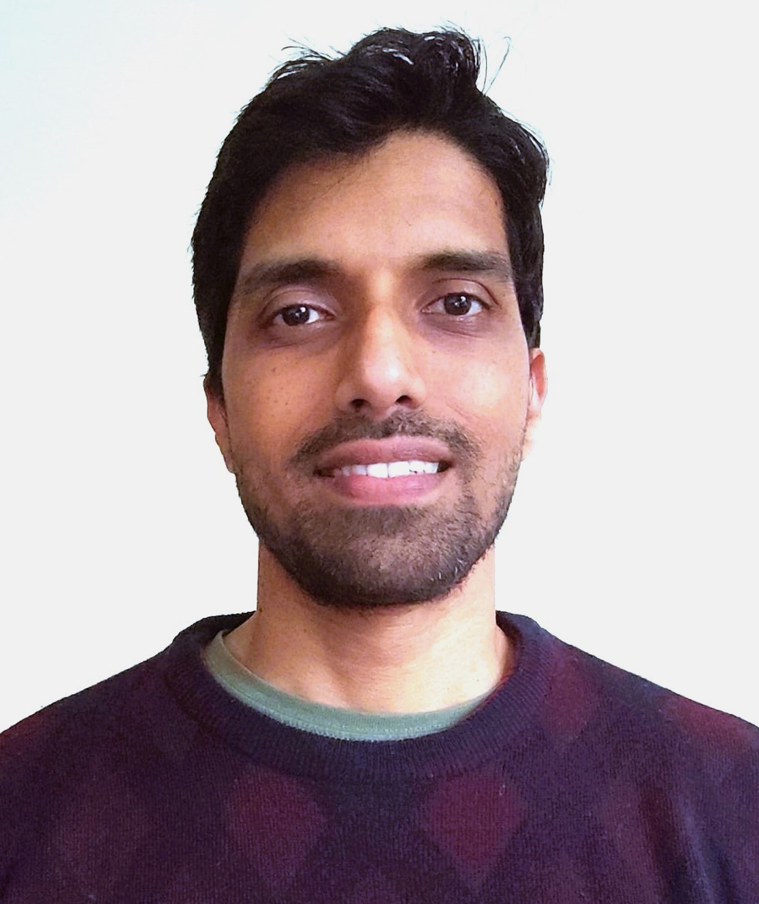
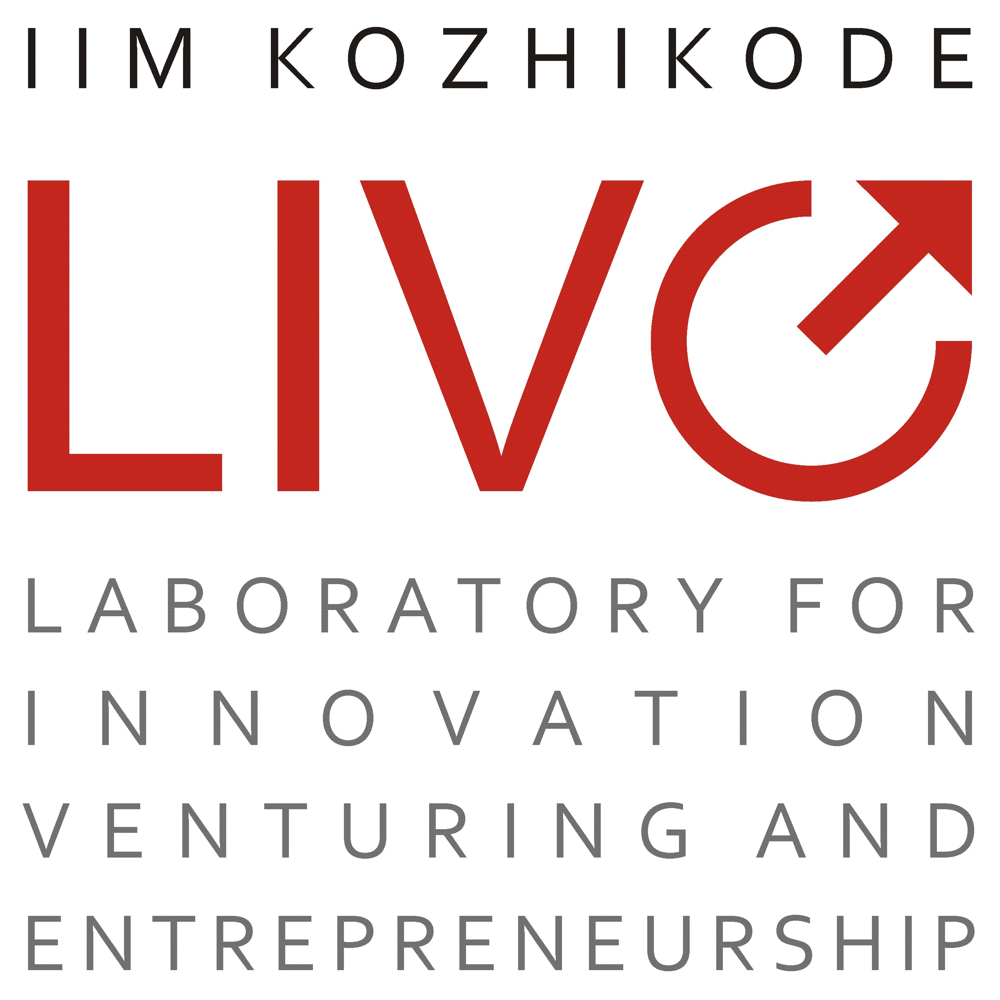
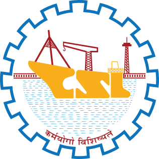

Technology · The Tentacle-Arm
Hyper-redundant. Portable. Shaped to navigate confined geometry rigid arms cannot enter.
Access
A hyper-redundant kinematic chain negotiates non-linear paths through confined geometry — routing past obstructions to a target that fixed arms and human hands cannot physically address.
The System

Capabilities
Non-constant curvature profiles. What rigid systems cannot do.
Founders
PhD in Robotics, IISc Bangalore. 17 years' experience in complex product design and development; Tentacle-Arm hardware architect.

PhD in Robotics, IISc Bangalore. 18 years' experience in robotics software development and hardware integration; Tentacle-Arm software architect.
Where we are now
We're talking to ROV OEMs for integration pilots, offshore operators for field trials, and investors for the next round. If your work touches subsea or confined-environment robotics, we want to hear from you.
Backed by


Total of ₹40 lakh ($48K) in non-dilutive grant funding via NIDHI PRAYAS grant from DST–Maker Village and USHUS grant from CSL–IIMK LIVE.